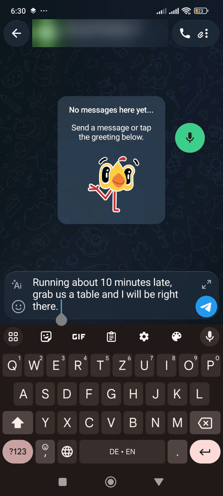
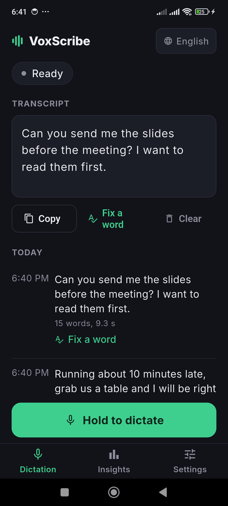
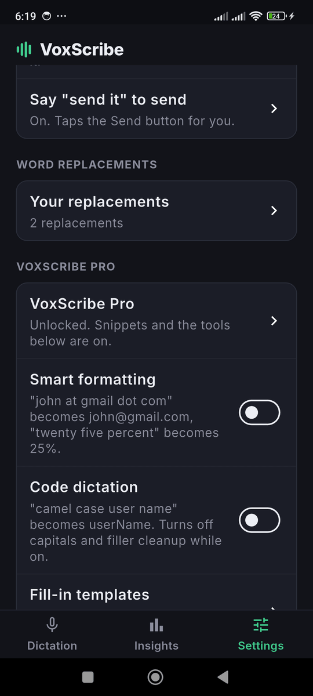

Tap any text box, hold a small floating button, talk, and let go. Your words are transcribed on the phone and typed into the box, in any app, with whichever keyboard you already use. No account, no subscription, and your voice is not uploaded.
Free & open source (MIT) · Android 8 or newer, 64-bit · about 115 MB · version 1.1.2
When you tap a text field and the keyboard opens, a small button appears above it. Hold it to record and release to stop, or tap it once to start and again to stop. The text appears in the field. The button stays out of the way otherwise: it is hidden when no text box is focused, it never shows in password or PIN boxes, you can drag it anywhere, and dragging it to the bottom of the screen hides it for 10 minutes.



The speech model ships inside the app, so there is nothing to download and it works in airplane mode. Audio is processed on the phone and discarded. If you turn the bundled model off, Android's own recognizer is used instead, and the privacy policy says exactly when that can involve Google's service.
Voice commands, "send it", Fix a word and word replacements are free. Smart formatting, code dictation, fill-in templates and per-app profiles unlock with the same optional one-time Pro key as the Windows app.
Setup takes three permissions, and the app walks you through them: the microphone, display over other apps (to draw the button), and the Accessibility service. Android requires the Accessibility service for any app that types into other apps. VoxScribe uses it to find the focused text field and add your dictation to it, and the privacy policy lists exactly what it reads and does not do.
Download the APK from the Android 1.1.2 release and open it. Android will ask you to allow installs from your browser or files app once. VoxScribe is not on the Play Store yet. When a newer version is published, the app shows an update banner with a download button.
Prefer automatic updates? Use Obtainium, a free app that installs and updates apps straight from their GitHub releases. In Obtainium, tap Add App, paste https://github.com/ahmedhmam1994/voxscribe-ai-voice-dictation, and set "Filter release titles by regular expression" to Android, so it skips the Windows releases in the same repository.
Yes. VoxScribe for Android is free and open source (MIT). Transcription runs on the phone with a Whisper model bundled in the app, so it works in airplane mode and your audio is not uploaded.
No. It is a small floating button that appears above whichever keyboard you already use when you tap a text field. Hold it, talk, release, and the text is typed into the box.
Android only lets an app type into other apps through an accessibility service. VoxScribe uses it to find the focused text field and put your dictation there, and nothing else. The privacy policy lists exactly what it reads and does.
Not yet. Download the APK from the GitHub release and open it. Android asks once to allow installs from your browser or files app. For automatic updates, add the GitHub repository to Obtainium (see Install above).
Related guides: Free Voice Dictation Guide, Dictate Into Any App Guide, Offline Alternative to Windows Voice Typing, Offline Whisper Dictation for Windows, Arabic Voice Typing for Windows, Free .srt Subtitle Generator, Dictate AI Prompts, Voice Typing for Wrist Pain, Android Voice Typing Without the Cloud, Privacy at a Glance, Windows Security Warning Explained.
Home · Android · GitHub · Privacy · This site uses Google Analytics, see the privacy policy.